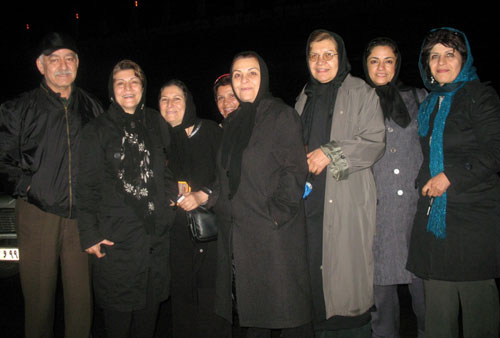

|
|

خدیجه مقدم آزاد شد
چهار شنبه19 فروردین 1388
تغییر برای برابری - خدیجه مقدم پس از14 روز بازداشت در زندان اوین آزاد شد.

چهارشنیه 19 فروردین، یک روز پس از آزادی محبوبه کرمی، خدیجه مقدم نیز با تودیع قرار وثیقه 20 میلیون تومانی برای پرونده جدیدی که برایش بازشده و همچنین کفالت 50 میلیون تومانی مانند دیگر متهمان جنبش زنان که قصد دیدار نوروزی با مادر زهرا بنی یعفوب را داشتند آزاد شد.
خبراحتمال آزادی او را همسر خدیجه مقدم پس از تودیع کفالت و وثیقه به دادسرای امنیت اعلام کرد و سرانجام ساعت 9شب خدیجه مقدم در میان استقبال مادران آزاد شد..
به گفته وکیل خدیجه مقدم و همچنین خود او دادیار پرونده اتهامات جدیدی به او وارد کرده است. فعالیت تبلیغی علیه نظام و تمرد از دستور پلیس در جلوی سفارت فلسطین از اتهامات اوست.